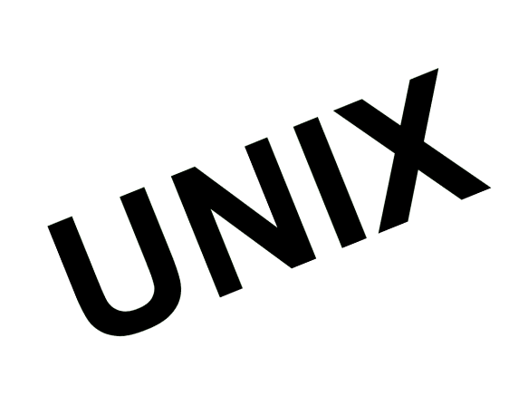

UNIX es un sistema operativo portable, multitarea y multiusuario; desarrollado
en 1969 por un grupo de empleados de los laboratorios Bell de AT&T.12.

Fue el primer sistema operativo que introdujo conceptos fundamentales
de la tecnología de la información como la estructura jerárquica de los
sistemas de archivos, pero también sirvió como punto de partida para el
desarrollo de otros sistemas.
Es el precursor de los sistemas operativos modernos como: sistema de
archivos jerárquico y universal, multitarea, sistema multiusuario,
capacidad de red, multiplataforma.
Permite un juego de instrucciones bien estructurado que permitiera utilizar
el lenguaje de programación PL/I de IBM para su desarrollo.
daniela cabezas tapia
daniela.cabezas.t@mail.pucv.cl
catalina gonzález pérez
catalina.gonzalez.p@mail.pucv.cl
italo spinetto yanca
italo.spinetto.y@mail.pucv.cl